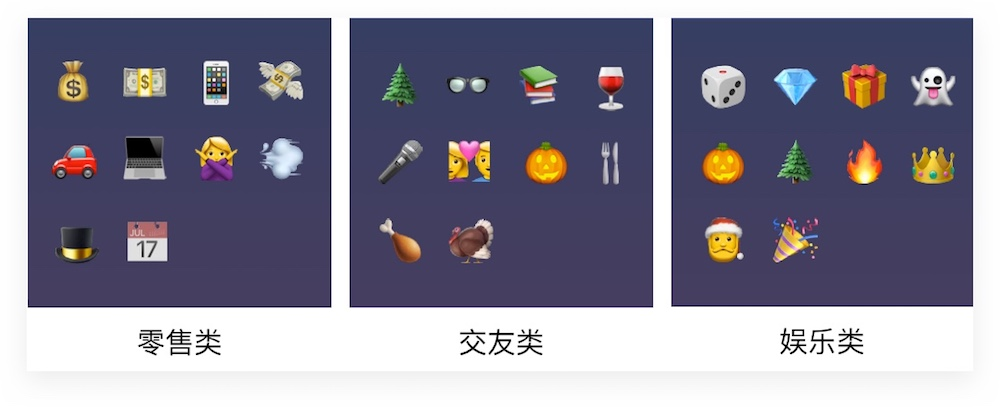

用了 Emoji 后，App 的吸引力能翻倍？🤔 | 灵感早读
2017-6-22
除了用来聊天，还能用来做什么？产品人尝试在 app 界面/通知里面加入 emoji 之后，发生了让人惊讶的变化……
作者 5key 是跨境电商移动产品设计 Leader，拥有 14 年设计从业经验。相信他的分享，能为你带来启发。
我们每天都在使用微信、钉钉、旺旺等 IM 工具进行沟通，emoji 表情已经成为大家聊天必备工具。在聊天中使用 emoji 不仅简单高效、还能让我们的沟通更加情感化。
不过 emoji 的功效不仅于此，当我们在使用 emoji 聊天的时候，很多产品已经悄悄将它运用到了产品设计和营销中。本期的周刊将和大家聊聊 emoji，看看它究竟如何运用在产品设计中，又为何能带来如此大的数据增长。
究竟什么是 Emoji
Emoji 是一种表情符号，它源自日本词汇「绘文字」。因为在日语中的假名为「えもじ」，与 emoji 的读音一样，于是也就有了我们天天都在用的 emoji。
很多人对 emoji 的了解是源于 iOS 对它的引入，但其实它的创作者是一位叫做栗田穰崇（Shigetaka Kurita）的日本人。栗田穰崇由日本漫画中的表情以及日本汉字中获得灵感创作了一组表情符号，通过这些简单的符号来表达沟通中的情感。
每年的 7 月 17 日是世界 emoji 日，这期日期的由来还有一个有趣的小故事。2002 年的 MacWorld 大会上苹果发布了 OS 上的日历产品，而这一天正好是 7 月 17 日。
于是之后 emoji 的设计标识也选择了 7 月 17 日，而这一天也最终成为了世界 emoji 日。关于 emoji 日更多信息，大家可以查看 http://worldemojiday.com/。
Emoji 对商业的影响有多大？
回到今天的主题，emoji 在产品中的使用究竟能给商业带来多大的价值？我们可以先从一份数据开始说起。
Leanplum（移动互联网营销平台）联合 Appannie（移动端数据统计平台）基于 2016 年 26 亿条信息进行了一次关于 Push 消息的数据分析（A 君注：Push 消息也就是那些出现手机屏幕顶端的 app 横幅通知）。
分析得到了很多有趣的信息，我在这里找了 3 个比较值得关注的点与大家分享一下：
1. 2016 年 Emoji 表情的使用率上涨了 163% 🚀
2015 年共有 1,467 个 Push 活动使用了 emoji 表情，这个数据到 2016 年增长到了 3864 个，使用率提升了 163%。这说明了用户对于 emoji 的接受度和商家对 emoji 的意识度都在不断提升。
2. Emoji 使得 Push 通知的打开率提升了 85% 😱
基于以上分析，Leanplum 发现在 Push 通知中使用 emoji 的打开率达到 4.54%，而未使用 emoji 的打开率在 2.44%。
要知道 Push 的目的就是拉回用户，而如何让 Push 的信息吸引人则是大家都非常关注的，适当地使用 emoji 能够提升 Push 通知打开率，这个非常值得尝试。
3. 就 Emoji 的推送效果来看，Android 平台的效果要由于 iOS 平台 😹
使用 emoji，iOS 推送的打开率增长 50%，Android 推送的打开率则提升了 135%。

其实不仅仅是在 Push 推送消息中的使用，emoji 在很多其他地方的设计（比如 CTA）中也有同样的效果。
下图是设计工具 Canva 对于请求授权窗口 CTA 设计的两个版本，根据官方给出的测试数据，使用 emoji 的设计版本比图片的版本在点击转化率上高出 9%。
为什么 Emoji 能给产品带来如此大的影响 🤔
其实在 emoji 为用户熟知之前，大家就已经开始在 QQ 中使用表情了。在电脑上聊天我们并不能看到对方的脸，无法知道对方目前是什么表情。
而相比较于文字，emoji 让信息有更富有表现力，一个表情甚至就能代表一种态度、一条信息，这让我们通过冰冷的电脑世界进行聊天时更为亲密。
而 Push 信息作为一款产品与用户的再次接触点，是否能够引起用户的注意，除了文案本身，情感的传递也同样非常重要。这里可以再给大家分享一些案例。
大家应该可以明显感受到同样是一条 Push 信息，使用 emoji 和不使用 emoji 在情感上的传递是完全不一样的。当用户看到看到信息中的 emoji 表情会在脑海中自然地联想起相关场景，从而提升用户的点击查看意愿。
Leanplum 还基于前面的分析对常用的 emoji 表情进行了分类，如果大家需要使用可以借鉴一下。
其实早在 2015 年头，著名邮件营销服务商 MailChimp 就开始了对邮件标题使用 emoji 的支持。2 个月的时间里共有 20 多万个邮件营销活动在标题中使用了 emoji。
Top 15 的表情（下图）中我们可以看到几乎一半的热门 emoji 表情都是笑脸，这也回应了前面提到的一点，通过笑脸来拉近与用户间的距离。
MailChimp 在文章中还提到，有近 31% 的营销邮件活动使用了不止一个 emoji 表情。于是它们利用数据分析生成了一张有趣的信息图，用于标识最常关联使用的 emoji 表情。
如果大家想要组合使用但又不知道如何选，可以先看看这张图：
我们常说需要做有温度的产品，其实除了产品的自身功能，在设计上的情感传递也同样非常重要。
Emoji 是表达情感的一种方式但并不是唯一手段。目前的主流产品中我最喜欢的是 Dropbox，它用插画的形式很好地降低了用户阅读信息的枯燥，也更好地引导用户进行操作。
Dropbox 的官网从很早开始就以插画而为大家所知。如果你仔细观察，你会发现他们的插画非常风格化，而且与当前的信息结合得非常好。相比 Dribbble 这类网站上的「飞机稿」，这些有故事、有主题的插画则更有意思。
写在最后
其实在确定这期主题之后，我就分别在知乎和公众号中也进行了标题使用 emoji 的测试。这段时间我总共发出了 3 篇文章，公众号只能在文章简要描述（推送信息卡片下的描述）使用 emoji，3 篇文章的阅读量均有 30% 左右阅读量的提升。
知乎专栏没有阅读量统计，从互动数（评价、点赞）上来相对前几篇文章也有 1、2 倍的增长。
当然，影响一篇文章数据有很多的因素，我能感觉到 emoji 的一些帮助，但目前能拿到的数据也不足以支撑我笃定 emoji 在标题中的作用。
所以如果大家有机会去做接下来的 Push 活动，不妨来在标题中尝试一下 emoji。也欢迎大家来告诉我，使用 emoji 是否真的有帮助呢？
关于 emoji，还有这些信息你可能感兴趣：
- emoji 表情查询：http://getemoji.com/
- 世界 emoji 日：http://worldemojiday.com/
- Instagram 对于 emoji 的分析：Emojineering Part 1: Machine Learning for Emoji Trends
- 中国用户对于 emoji 的理解：Chinese people mean something very different when they send you a smiley emoji
- GE 使用 emoji 进行科普：http://emojiscience.com/
文章授权转自 PinDesign 移动产品设计会员计划，原文链接：PinDesign 互联网产品设计周刊